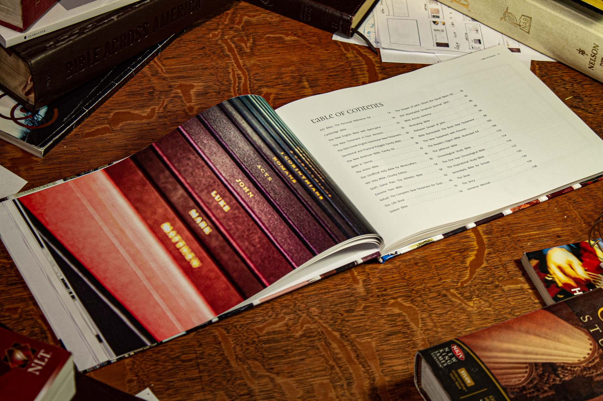
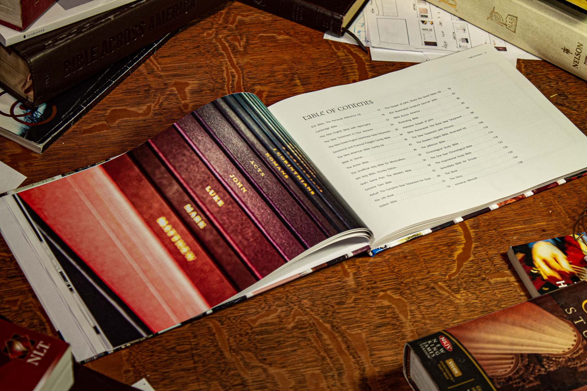
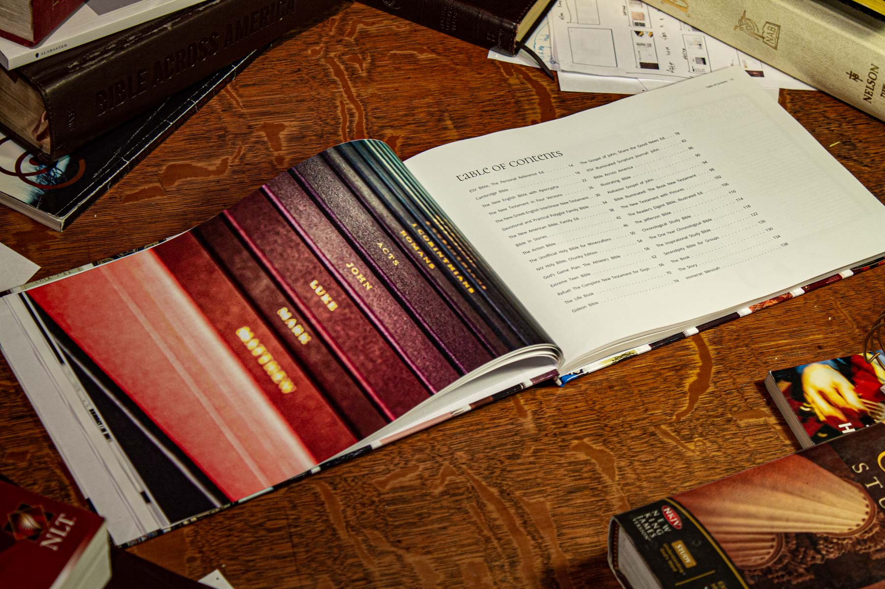
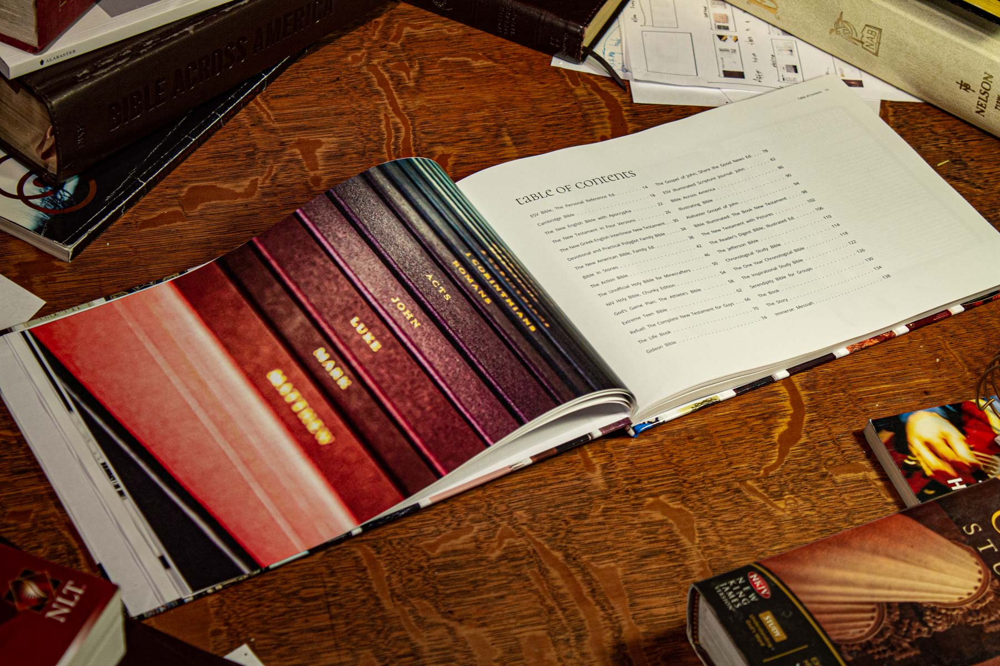

Part archive and part analysis of the most widely distributed book in the world. 32 Bibles were compiled and uniformly documented, chosen based on their diversity of design features, audience, and purpose. Together, they serve as a snapshot of the continually shapeshifting form of the Christian Bible.